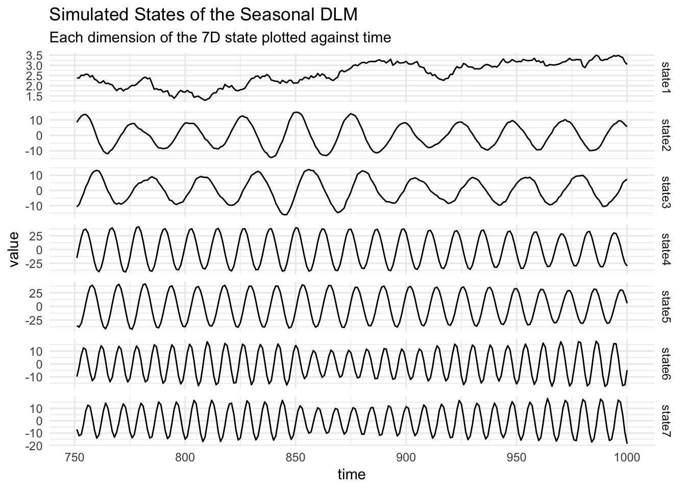
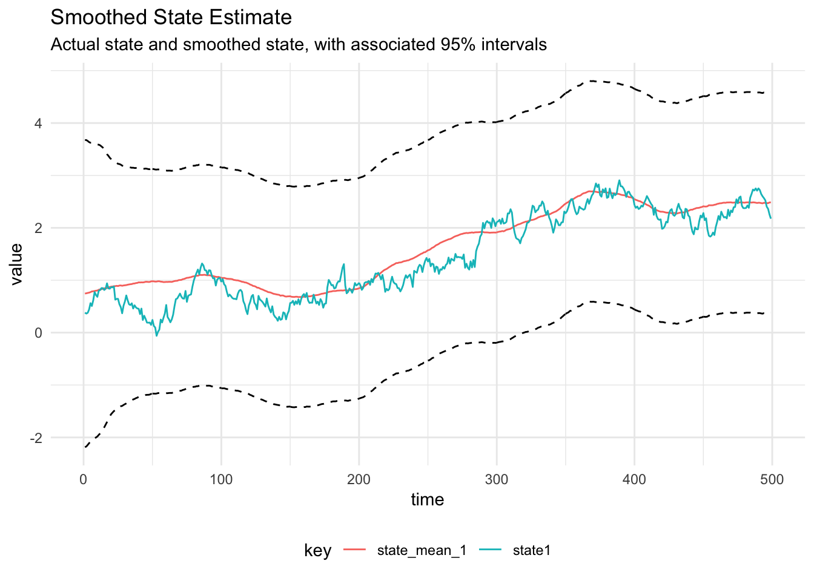
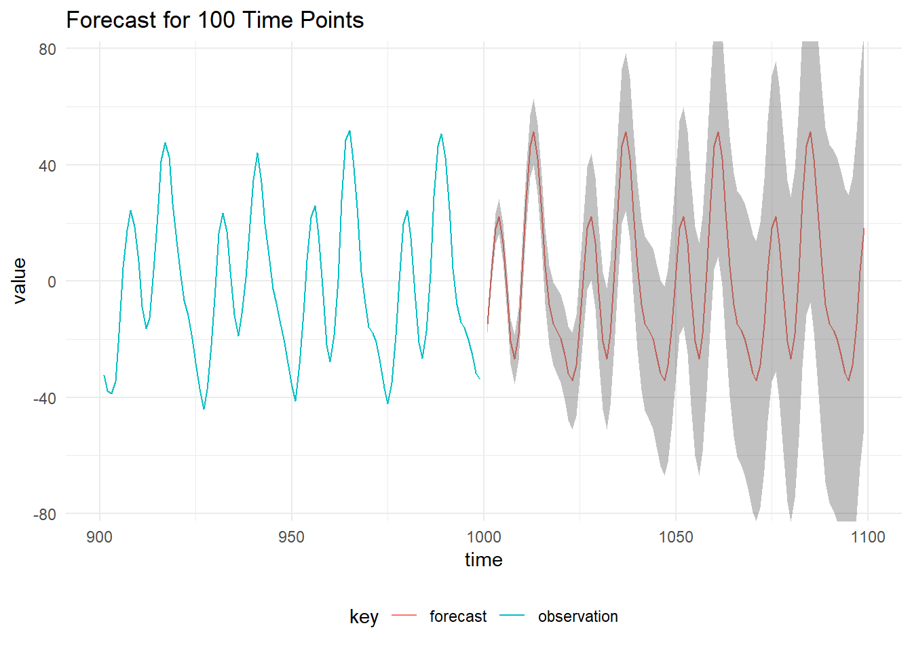

Seasonal DLM
Simulate From a Seasonal DLM
Many time series have a periodic effect which we want to model in order to make more accurate long term forecasts. Environmental processes such as temperature as well as airline sales have periodic effects. With the DLM structure, we can model multiple seasonal effects in a simple way, by specifying a specific structure for the system evolution matrix G. Consider a DLM with observations \(y_{1:T}\) and a latent state \(x_{0:T}\):
\[\begin{align*} Y_t | \textbf{x}_t &= F \textbf{x}_t + v_t, &v_t &\sim \mathcal{N}(0, V) \\ X_t | \textbf{x}_{t-1} &= G \textbf{x}_t + w_t, &w_t &\sim \mathcal{N}(0, W) \\ X_0 &\sim \mathcal{N}(m_0, C_0) \end{align*}\]
The system noise covariance matrix is \(W\) and the measurement error variance is \(V\). The system evolution matrix is block diagonal and contains rotation matrices. If we define \(T\) to be the period of the seasonality then the frequency is, \(\omega = 2\pi/T\), a rotation matrix for the \(h^{\textrm{th}}\) harmonic in the system evolution matrix is given by:
\[R(h, \omega) = \begin{pmatrix}\cos(h\omega) & -\sin(h\omega) \\ \sin(h\omega) & \cos(h\omega) \end{pmatrix}\]
Then the system matrix is:
\[G = \begin{pmatrix} R(1, \omega) & 0 & \dots & \dots & 0 \\ 0 & R(2, \omega) & 0 & \dots & 0\\ \vdots & 0 & \ddots & &\vdots \\ 0 & \dots & 0 & R(h, \omega) \end{pmatrix}.\]
The observation matrix is \(1 \times 2h\) dimensional:
\[F = \begin{pmatrix}1 & 0 & 1 & \dots & 1 & 0 \end{pmatrix}.\]
We can specify a seasonal model with trend using:
import core.dlm.model._
import cats.implicits._
val mod = Dlm.polynomial(1) |+| Dlm.seasonal(24, 3)This model has 3 harmonics, resulting in a 7-dimensional state space. In order to model additional seasonalities we add more blocks to the block diagonal \(G\) matrix with the appropriate period. For instance if we wanted to model weekly seasonality \(T = 24 * 7\) then we can add this to the existing model:
val weeklyModel = mod |+| Dlm.seasonal(24 * 7, 3)Then we can simulate from the model by supplying parameters and use the simulateRegular function:
import breeze.linalg.{DenseMatrix, DenseVector, diag}
val p = Dlm.Parameters(
v = DenseMatrix((1.0)),
w = diag(DenseVector(0.01, 0.2, 0.4, 0.5, 0.2, 0.1, 0.4)),
m0 = DenseVector.fill(7)(0.0),
c0 = diag(DenseVector.fill(7)(1.0))
)
val sims = Dlm.simulateRegular(0, mod, p, 1.0).
steps.
take(1000).
toVector
Plot the states:

Filtering
We can perform Kalman Filtering, to learn the distribution of the latent state given the data we have simulated:
val filtered = KalmanFilter.filter(mod, sims.map(_._1), p)
Smoothing
Kalman Smoothing can be performed:
val smoothed = Smoothing.backwardsSmoother(mod)(filtered)
Parameter Learning using Gibbs Sampling
The system matrix \(W\) is diagonal, hence the Inverse Gamma distribution can be used for the observation and system noise matrices in a Gibbs Sampler. The state is sampled using Forward Filtering Backward Sampling (FFBS), then conditional on the state, the system and observation noise matrices are sampled from Inverse Gamma distributions.
val iters = GibbsSampling.sample(
mod,
InverseGamma(5.0, 4.0),
InverseGamma(17.0, 4.0),
p,
sims.map(_._1))The diagnostic plots are below:

Diagnostic plots for the MCMC chain representing draws from the posterior distribution of the System noise covariance matrix for the simulated seasonal model
Forecast DLM
Forecasting a DLM is equivalent to running the Kalman Filter without any observations at the time of interest. We initialise the forecast by using the posterior distribution of the latent state at the time of the last observation, \(x_T \sim \mathcal{N}(m_T, C_T)\) and use the values of the parameters identified using Gibbs sampling.
First we take the mean of the posterior distribution of the parameters from the the MCMC output. Assuming that the parameters have been written to a CSV called seasonal_dlm_gibbs.csv with eight columns, \(V, W_1,\dots,W_7\):
import java.nio.file.Paths
import kantan.csv._
import kantan.csv.ops._
import breeze.stats.mean
val mcmcChain = Paths.get("core/data/seasonal_dlm_gibbs.csv")
val read = mcmcChain.asCsvReader[List[Double]](rfc.withHeader)
val params: List[Double] = read.
collect { case Right(a) => a }.
toList.
transpose.
map(a => mean(a))
val meanParameters = Dlm.Parameters(
v = DenseMatrix(params.head),
w = diag(DenseVector(params.tail.toArray)),
m0 = p.m0,
c0 = p.c0)We use these parameters to get the posterior distribution of the final state:
val filtered = KalmanFilter.filter(mod, sims.map(_._1), meanParameters)
val (mt, ct, initTime) = filtered.map(a => (a.mt, a.ct, a.time)).lastThen initialise the forecast function with the state posterior at the time of the last observation:
val forecast = Dlm.forecast(mod, mt, ct, initTime, meanParameters).
take(100).
toListThe mean of the forecast and 99% prediction intervals are below:
